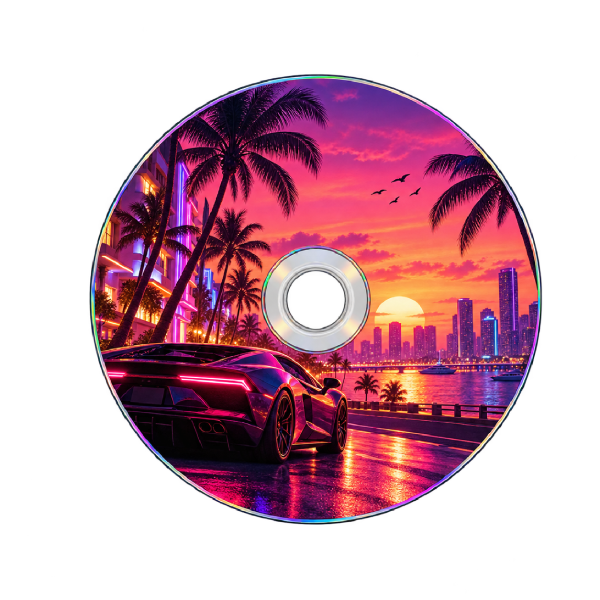

Interaktive Scheibe

Steuerung
- L – Scheibe nach links drehen
- R – Scheibe nach rechts drehen
- A – automatische Rotation starten / stoppen
Automatische Rotation: aus
Sprite-Sheet-Animation
Zusätzliche Sprite-Sheet-Animation eines vorbeifahrenden Autos.
Hinweise und Quellen
Die Scheibe kann mit den Tasten L und R schrittweise gedreht werden. Mit A wird die automatische Rotation gestartet und wieder angehalten.
Bildmaterial: Die Ausgangsbilder der Spiele-CD und des Autos wurden mit ChatGPT generiert und anschließend für diese Aufgabe eigenständig bearbeitet und zu den verwendeten Einzelbildern bzw. dem Sprite-Sheet zusammengestellt.